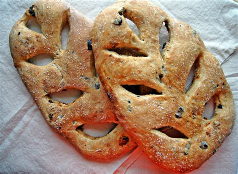

Occitanie
Vue d'ensemble
Occitanie, située dans le sud de la France, s'étend des Pyrénées à la Méditerranée. Connue pour sa riche histoire, son architecture romaine et son climat ensoleillé, elle comprend des villes dynamiques comme Toulouse et Montpellier.
Informations Rapides
- Capitale: Toulouse
- Langue régionale: Français (avec des dialectes occitans)
- Population: ~6 millions
- Réputée pour: Industrie aéronautique, ruines romaines, Canal du Midi, vignobles
- Le saviez-vous? Toulouse accueille Airbus et est surnommée « La Ville Rose » en raison de ses briques en terre cuite !
Plats Populaires
Cassoulet

Brandade de Nîmes
Fougasse

Fromage Roquefort

ìMonuments célèbres
Pont du Gard
Cité de Carcassonne

Canal du Midi
Capitole de Toulouse
Centre historique de Montpellier

Meilleure période pour visiter
Le printemps (avril–juin) et le début de l’automne (septembre–octobre) sont idéaux pour explorer le patrimoine romain et les régions viticoles. L'été est parfait pour les plages de la Méditerranée.
Symboles régionaux
- Drapeau:
- Blason: